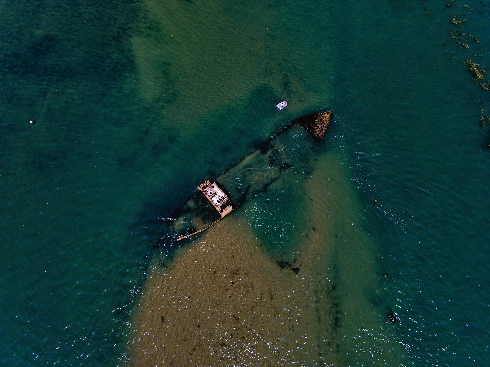
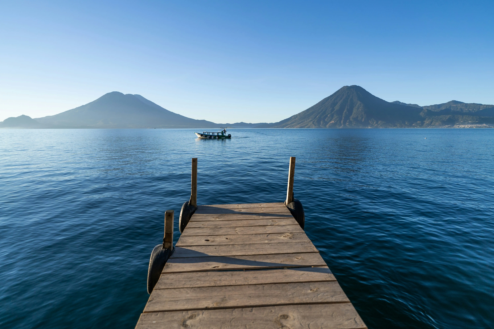
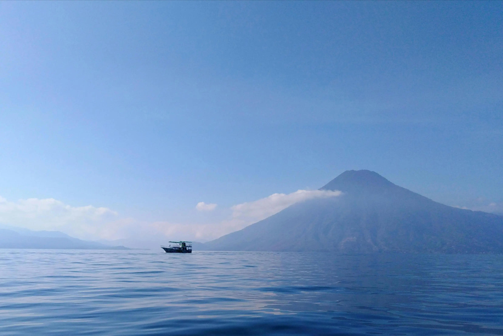

Guatemala es un país que cuenta con muchas maravillas naturales, entre ellas el lago de Atitlán,
un lago hermoso rodeado de tres volcanes que muchos llaman "guardianes", lo que crea un paisaje sumamente
impactante.
No solamente es admirado por nosotros, los chapines, sino también por los extranjeros que nos visitan y
admiran
lo imponente que llega a ser esta maravilla natural.
Esta es una de las reseñas destacadas en la web: Atitlán considerado uno de los lagos más bellos de
Centroamérica y
del mundo donde los turistas, quienes llegan de cualquier parte del mundo,
se sorprenden al apreciar su grandeza e historia.
El lago Atitlán se encuentra en el departamento de Sololá
y es uno de los lugares turísticos más visitados de Guatemala.
Alrededor de él están tres imponentes volcanes llamados Atitlán, Tolimán y San Pedro.
Diario El Comercio
La contaminación un problema creciente
El Lago de Atitlán, uno de los tesoros naturales más hermosos no solo de Guatemala, sino del mundo, está
en serio peligro.
Lo que una vez fue un paraíso de aguas cristalinas y paisajes de ensueño, hoy enfrenta una amenaza real:
la contaminación por desechos sólidos, aguas residuales y productos químicos está poco a poco apagando su
belleza.
Y siendo sinceros... no podemos quedarnos de brazos cruzados.
Hoy más que nunca necesitamos de tu ayuda.
Cuidarlo está en nuestras manos, porque si no actuamos ahora, podríamos perderlo para siempre.
¿Estás listo?
Tal vez te preguntes: ¿Y el gobierno qué hará?
Pero seamos honestos… ¿de verdad vamos a dejarle toda la responsabilidad a ellos?
Miles de personas y organizaciones sin fines de lucro ya están luchando día a día contra esta amenaza, y
no solamente acá, sino también en diferentes lugares del país,
pero la verdad es que no es suficiente..
Esto nos necesita a todos —incluyéndote a ti.
Testimonios